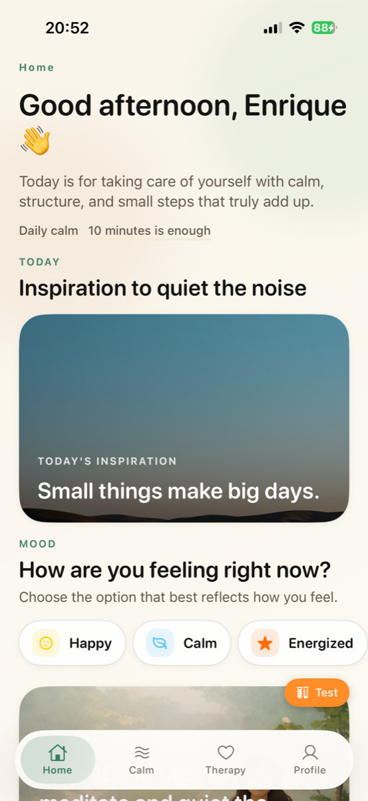
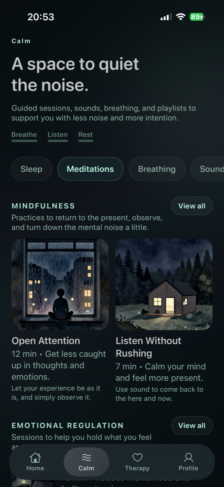
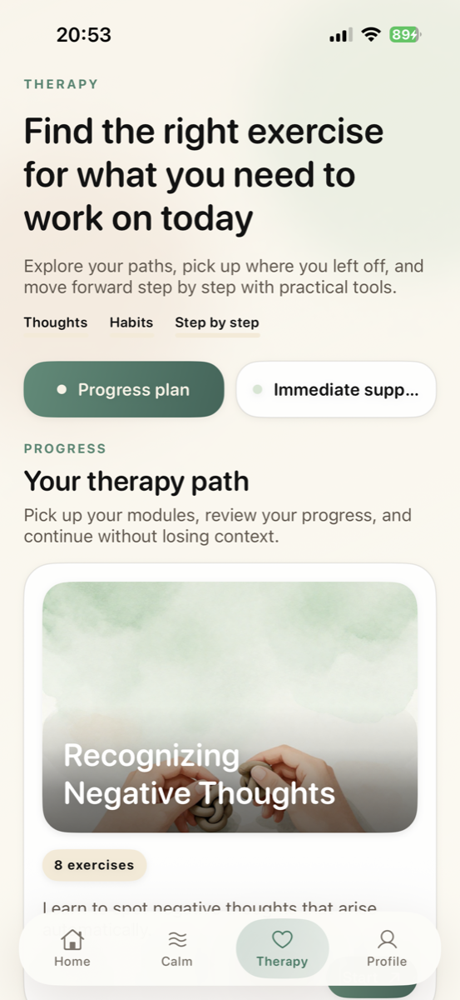

Self-guided emotional wellness
MindSteer
MindSteer is a self-guided emotional wellness app grounded in cognitive behavioral principles. It brings together mood check-ins, short reflective exercises, calm practices, and progress tracking so users can understand what they feel, notice repeated thought patterns, and build healthier daily rituals at their own pace.
The experience is intentionally warm and practical: small actions, clear language, and a daily path that helps people move from emotional awareness to a concrete next step.

Home
Calm
TherapyDesigned for review and transparency
Clear product context, clear legal access.
MindSteer combines Home guidance, Calm tools, and structured Therapy exercises into a single private workspace for self-observation and emotional regulation. The app is designed for wellbeing and education only: it does not provide medical diagnosis, psychotherapy, psychiatric care, or emergency services.